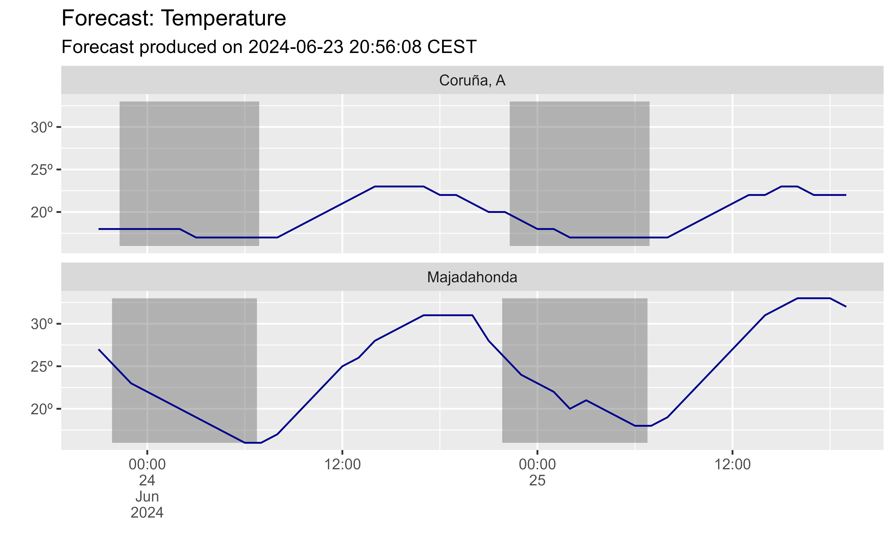

Helpers for aemet_forecast_daily() and aemet_forecast_hourly():
aemet_forecast_vars_available()extracts the values available on the dataset.aemet_forecast_tidy()produces a tibble with the forecast forvar.![[Experimental]](figures/lifecycle-experimental.svg)
Arguments
- x
A database extracted with
aemet_forecast_daily()oraemet_forecast_hourly().- var
Name of the desired var to extract
Value
A vector of characters (aemet_forecast_vars_available())
or a tibble (aemet_forecast_tidy()).
See also
Other forecasts:
aemet_forecast_daily()
Examples
# Hourly values
hourly <- aemet_forecast_hourly(c("15030", "28080"))
# Vars available
aemet_forecast_vars_available(hourly)
#> [1] "estadoCielo" "precipitacion" "probPrecipitacion"
#> [4] "probTormenta" "nieve" "probNieve"
#> [7] "temperatura" "sensTermica" "humedadRelativa"
#> [10] "vientoAndRachaMax"
# Get temperature
temp <- aemet_forecast_tidy(hourly, "temperatura")
library(dplyr)
# Make hour - Need lubridate to adjust timezones
temp_end <- temp %>%
mutate(
forecast_time = lubridate::force_tz(
as.POSIXct(fecha) + hora,
tz = "Europe/Madrid"
)
)
# Add also sunset and sunrise
suns <- temp_end %>%
select(nombre, fecha, orto, ocaso) %>%
distinct_all() %>%
group_by(nombre) %>%
mutate(
ocaso_end = lubridate::force_tz(
as.POSIXct(fecha) + ocaso,
tz = "Europe/Madrid"
),
orto_end = lubridate::force_tz(
as.POSIXct(fecha) + orto,
tz = "Europe/Madrid"
),
orto_lead = lead(orto_end)
) %>%
tidyr::drop_na()
# Plot
library(ggplot2)
ggplot(temp_end) +
geom_rect(data = suns, aes(
xmin = ocaso_end, xmax = orto_lead,
ymin = min(temp_end$temperatura),
ymax = max(temp_end$temperatura)
), alpha = .4) +
geom_line(aes(forecast_time, temperatura), color = "blue4") +
facet_wrap(~nombre, nrow = 2) +
scale_x_datetime(labels = scales::label_date_short()) +
scale_y_continuous(labels = scales::label_number(suffix = "º")) +
labs(
x = "", y = "",
title = "Forecast: Temperature",
subtitle = paste("Forecast produced on", format(temp_end$elaborado[1],
usetz = TRUE
))
)
